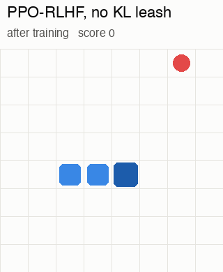
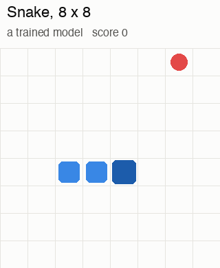
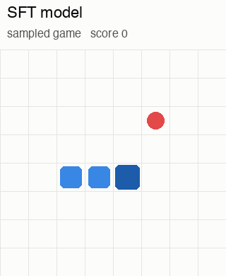
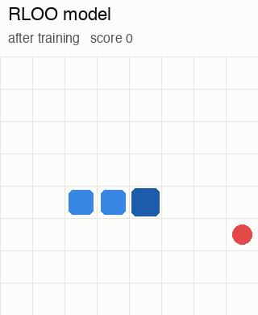
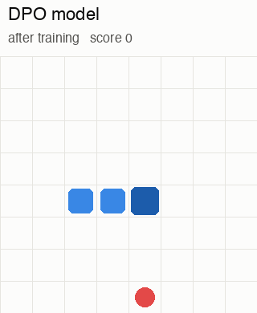
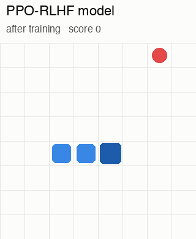
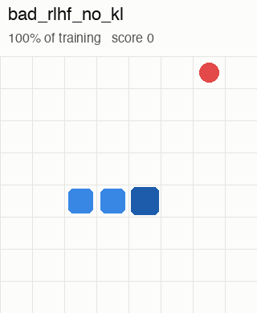
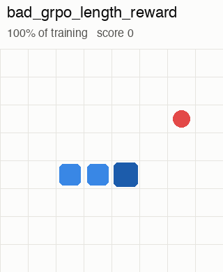
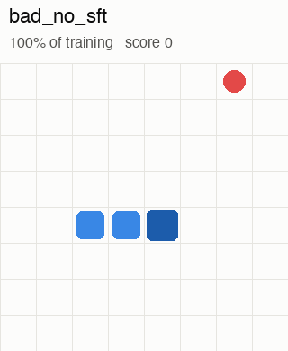

Reinforcement learning for language models · a 156k-parameter experiment
Teaching a tiny GPT to play Snake
A tiny model, trained on one laptop. How do you teach it to play well, and how can you tell when training goes wrong?
Cold open · one of our training runs
The reward went up. The snake got worse.

replay · end of training: circling, not eating
What its reward model said1.5 → 11.5
The score it was trained to raise went up almost 8×.
What actually happened8.6 → 2.2 apples
The real score peaked, then collapsed. By the end, games last 113 moves and the snake mostly circles.
This videoHow does training produce a snake like this? We'll build the whole recipe that chatbots use, step by step, on a tiny model, and then come back to this run and see exactly what went wrong.
The game
Snake: eat apples, don't crash

replay · one of our trained models
The board is 8 × 8 cells. The snake starts 3 cells long, in the middle, heading right.
An apple appears on a random empty cell. Eat it and you get +1 point, the snake grows by one, and a new apple appears somewhere else.
Game over if you crash into a wall, bite yourself, or go too long without eating.
The score is the number of apples eaten. Every chart in this video is about that number.
The setup
The board is a prompt. The move is the answer.
Probabilities: the SFT model on this exact board
The setup · the model
Inside TinyGPT: embed, three blocks, a head
Model code: llm/common.py · the same design as GPT-2, but tiny
Training · how a network learns
Training is walking downhill on the loss
step = − learning rate × slopeslope (the gradient): which way is uphill, how steep
Drawn with 2 weights. TinyGPT has 156k: same idea, more directions
Training · stage 0, pretraining
Pretraining: guess the next word, trillions of times
The task: read some text and guess the next word. (Really the next token: a word or a piece of one.)
The loss is small if the real next word got a high chance, and big if it didn't.
Each guess is one downhill step: nudge the weights so the real word gets a bit likelier.
Repeat on trillions of words of web pages, books and code. No one labels anything: the text itself is the answer key.
The result: a base modelIt predicts continuations: it can often answer, but it isn't specifically trained to respond as an assistant. Post-training teaches that.Our SnakeWe skip this stage. TinyGPT starts from random weights.
Next-token pretraining: GPT, Radford et al., 2018
SFT · what the data looks like
Every example is a conversation in a fixed template
One SFT example, as the model sees it<|im_start|>system
You are a helpful assistant.<|im_end|><|im_start|>user
What is the capital of France?<|im_end|><|im_start|>assistant
The capital of France is Paris.<|im_end|>
the model learns to write this part, and to end it with <|im_end|>
Chat model
Our Snake model
<|im_start|>user
<bos>
the question
64 board tokens + heading
<|im_start|>assistant
<sep>
the answer
one move: U, R, D or L
<|im_end|> to stop
not needed: always one token
Our data154k examples from the teacher bot: one board, and the move it chose.
Template: ChatML-style, as shown in rlhfbook.com ch. 4
Notation · before any loss
π is a probability. −log π is the penalty.
π( move | board ) is the probability the model gives a move, given the board. Read it "pi of move given board".π is just the usual letter for the model, the "policy". It always means a number between 0 and 1.
−log π turns that probability into a penalty: about 0 when the model gave the right answer nearly all its probability, and huge when it gave it almost none.Training pushes the penalty down, which is the same as pushing π of the right answer up.
log means the natural log (ln) throughout · probabilities on the top row are the trained model's real numbers
SFT · the loss
Same loss as pretraining, but only the answer is graded
loss = − Σanswer tokens log π( token | everything before it )Snake's answer is one token, so this is just − log π( move | board )
rlhfbook.com ch. 4
SFT · our version
Our teacher is a Snake bot. Our model starts from nothing.
One honest differenceReal LLMs start SFT from a pretrained base model that already knows language. Ours starts from random weights, so here SFT does both jobs: it teaches the format and how to play.
SFT · results on Snake
SFT gets close to the teacher, but not past it

replay · after SFT
Training: about 5 minutes on a laptop CPU.
At the end: 89% of moves match the teacher, format errors drop to about 6%, and the model scores 4.6 per game.
The limitSFT can only imitate. It copies the teacher's mistakes too, and it never sees what happens after a bad move.
After SFT · what's missing
Our copy stayed below its teacher. We need better.
What SFT optimisesMatching the teacher, not raising the score
SFT is graded on matching the teacher's next move, never on whether the snake ate an apple or crashed. It copies the teacher's random mistakes as faithfully as its good moves. Our SFT model stayed below the teacher: 4.6 apples against 7.0.
What's missing: a signal for "better". If you can measure it…Use the score
Snake: count the apples. Math: check the answer. Code: run the tests. That's where we go next: RL with apples.
…and if you can'tAsk people to compare
Is a chatbot answer helpful? Kind? Honest? There is no formula. But people can pick the better of two answers: a preference. We'll need that later.
Our routeSnake has a score, so we start with three RL methods that count apples. Then we pretend we can't count them and learn from preferences: directly (DPO), then through a reward model (PPO-RLHF).
Method 1 · REINFORCE · the loop
Try, get scored, adjust, repeat
No answers to copy. In SFT we showed the model the right move. Now it makes its own attempts and only learns how good they were.
Snake is a multi-step task. A game is many moves, each one a new prompt, like an agent working through a task. A chatbot reply is usually scored once, at the end.
rlhfbook.com ch. 3, "Manipulating the standard RL setup"
Method 1 · REINFORCE · the batch
Play many games, then update
A batch is every game played before we update the model. Ours: 64 games, 8 boards × 8 games each.
Why not update after every game? One game's score is partly luck: where the apples appeared, one unlucky roll of the dice. Averaging the push over 64 games cancels much of that luck, so each step points more reliably downhill.
Inside the batch, the moves from all its games are shuffled and fed in a few chunks, called minibatches. Each chunk is one downhill step, so one batch gives a few steps.
The batch also sets "expected"REINFORCE compares each game with the average of its batch. Bigger batches give steadier steps, but more games to play before each update.
Our RL runs: chunks of 1,024 moves · SFT: 256
Method 1 · REINFORCE · playing games
Same model, same start, eight different games
The model outputs probabilities, not one fixed move. During RL we roll the dice at every move, so the same start gives different games.
The spread is the signal. Games 2 and 4 went far better than game 1. RL makes whatever those games did a little more likely.
No spread, no signal. If all eight games scored the same, there would be nothing to compare. One of the failures later is exactly this.
Real data: 8 games sampled by our SFT model from one starting board
Method 1 · REINFORCE · the update
Play, score, and nudge the moves that beat expectations
loss = − A · log π( move | board )π( move | board ) = the model's probability of that move · A = advantage: how much better this game went than expected
A > 0: every move in that game becomes a bit more likely. A < 0: a bit less likely.
What counts as "expected"? In our REINFORCE run, it's the average score of all games in the batch. That reference point is called the baseline. A = the game's score minus that batch average.
Method 1 · REINFORCE · the full recipe
"Expected" = the average of all 64 games
A = R − mean( all games in the batch )R = apples eaten in this game, −1 if it ends in a format error · baseline = the average over the whole batch
Above the line: A > 0, so every move in that game gets more likely. Below: less likely.
One training step
Play 64 games: 8 boards, 8 games each.
Score each game: R = apples eaten (−1 for a format error).
A = R − the average of all 64 games.
Every move in a game gets that game's A. Update the model, one minibatch of moves at a time.
At the end:9.2 apples per game (average of the last 5 iterations), up from 4.4 and past the teacher's 7.0. Games last over twice as long (29 → 65 moves).
Why it can beat the teacherIt learns from its own results, not from copying. Moves that led to more apples get more likely, even moves the teacher never made.
Method 1 · REINFORCE · the catch
One average mixes easy and hard boards
Some starts are just easier. Every game from an easy board lands above the batch average and gets pushed up, even the badly played ones. Every game from a hard board gets pushed down, even the good ones.
It still learns the right thing on average, but each update gets noisier: part of every game's score is just the board it got. Noisier updates mean more games to learn the same amount.
In our Snake, the effect is small. Over 64 SFT games per board, board averages only range from 4.1 to 5.6 apples, while games on the same board swing by about ±2.7. For a chatbot, a "hello" and a maths proof differ far more.
Can we make the comparison fairer?Next, RLOO: compare each game only with the other games from the same starting board.
Bars are an illustration · board averages: 8 boards × 64 games sampled from our SFT model
Method 2 · RLOO, REINFORCE leave-one-out
Expected = the other games from the same start
Ai = Ri − mean( Rj, j ≠ i )8 games per start · 8 starts per step
Same prompt, fair comparison. The board's difficulty cancels out. A game is good only if it beat its siblings.
Why leave one out? Including the game in its own baseline would shrink its advantage. Leaving it out keeps the gradient unbiased.
One training step
Play 8 games from each of 8 boards.
For each game, average the other 7 from its board.
A = R − that average. Update, as in REINFORCE.
Result: 4.4 → 9.5.
Kool et al., "Buy 4 REINFORCE samples, get a baseline for free", 2019 · Ahmadian et al., "Back to Basics", 2024
Method 2 · RLOO results on Snake
RLOO: a fairer comparison, about the same score

replay · RLOO, ends in a format error
Training: the same budget as REINFORCE. Only the baseline changed.
At the end:9.5 per game, against 9.2 for REINFORCE: within the noise of one run. Snake boards are similar in difficulty, so a fairer baseline barely helped. About 5% of games still end in a format error, like this one.
Method 2 · RLOO · the catch
Nothing keeps it near where it started
No leashIt can wander far from SFT
Every update shifts its move probabilities a little. Over many updates they can end up far from the SFT model's: that's drift. Say on one board SFT picked R 55% of the time, and now 88%. Some drift is how it improves; too much, and it forgets what worked, with nothing pulling it back.
No speed limitOne update can be huge
If one batch looks very good, the update follows it all the way. With no leash, much looser brakes and a learning rate 30× higher, one of our runs collapsed within 3 iterations. We'll see it soon.
The fix, nextGRPO: a leash to the SFT model, and small steps. First we need a way to measure how far the model has moved.
Method 3 · GRPO · first, measure the drift
KL: how far has the model moved?
One board · move
SFT model
Now
now × log(now ÷ SFT)
U
0.30
0.08
−0.11
R
0.55
0.88
+0.41
D
0.10
0.03
−0.04
L
0.05
0.01
−0.02
KL
0.26
compare the two models' probabilities for the same board, move by move
KL = Σmoves π(move) · log( π(move) ÷ πSFT(move) )π = the model now · π_SFT = the frozen copy from before RL · log( π ÷ π_SFT ) is positive when the model now likes a move more than SFT did · averaged over boards
0 means identical. It grows when the model starts choosing moves the SFT model wouldn't, or abandons ones it would.
Why watch it? The SFT model is a known-good starting point. A model that has moved far may have found a trick in the reward, or forgotten the format.
In our runs · per moveGRPO with the leash: under 0.17. RLOO, no leash: up to 0.73. The run that collapsed: 75.
rlhfbook.com ch. 15 · table values are an illustration · run values from our training logs
Method 3 · GRPO · two seatbelts
Don't drift too far. Don't step too fast.
Why bothKL discourages going far in total. Clipping discourages going far in one update. GRPO and PPO use both. Right after GRPO's results, we remove the leash and loosen the brakes.
rlhfbook.com ch. 15 (KL) and ch. 6 (PPO's trust region) · bar values are an illustration
Method 3 · GRPO, group relative policy optimisation
Grade on a curve, and wear a seatbelt
loss per move = − A1 × ratio2 + β · KL3one number per move · training walks downhill on it
1
A: was this game good? Its score minus its group's average, divided by the group's spread. Above average: push its moves up. Below: push them down.
2
ratio: how much has this move already changed? We learn from each batch of games twice, so by the second pass the model has already moved. ratio = πnew(move) ÷ πold(move): its chance now versus when the game was played. Clipping at 0.8–1.2 removes A's incentive to push a move's chance further. A brake on big updates, not a hard limit.
3
KL: the leash. A small cost (β = 0.04) for drifting away from the SFT model.
No critic: the group is the baseline. Each update: 8 boards × 8 games. Result: 4.4 → 9.4.
KL hit 75 nats per move after the first update. Every game now ends at the wall, all 8 games in a group score the same, so there's no reward signal left.
Method 3 · GRPO · the catch
It needs a score you can compute
What worked hereWe could count apples
Every game was scored by a simple rule. Maths (check the answer) and code (run the tests) work the same way.
What a chatbot hasNo apple counter
Is this reply helpful? Kind? True? There is no formula, so there is nothing to grade on a curve.
The fix, nextAsk people which answer is better. First, we'll learn directly from those comparisons.
Preferences · why
Judging is easier than writing
Prompt
Help, I have to give a presentation tomorrow and I'm panicking.
Answer A rejected
You'll be fine. Practice your slides a few times, get some sleep, and stop overthinking it. Just present what you know and move on.
Answer B chosen
That sounds really stressful, and it's a normal reaction. If you can, do one quick practice run now, pick the one or two points you most want people to remember, and then give yourself permission to rest. Being clear and calm tomorrow will matter more than cramming tonight.
Writing the perfect answer is hard. What would a perfect reply even be? People disagree, and few of us could write it.
Picking the better of two is easy. Most people choose B in a few seconds. That choice is a preference.
So we collect lots of them: a prompt, two answers, and which one won. InstructGPT collected rankings for about 33K prompts.
The idea behind RLHFThere's no formula for "a good answer". We can't write the reward function by hand, so we learn it from comparisons.
Example from rlhfbook.com ch. 1 · "easier to tell good from bad than to write good": ch. 11 · 33K prompts: ch. 3
Preferences · on Snake
Which game was better?
Our rater is the apple count. We have no people, so the game with more apples wins. It stands in for a person picking the better answer.
Two sets of pairs, both from SFT games:
· for DPO: about 1,470 clean pairs. 4 games per board, best versus worst.
· for the reward model: 2,000 noisy pairs. 2 games per board, ties are a coin flip, 10% of labels flipped.
Now we have preference pairsTwo ways to use them: learn from them directly (DPO, next), or train a reward model on them (later, for PPO-RLHF).
Method 4 · DPO, direct preference optimisation · offline
No games played: learn from the pairs
One pair: two stored games from the same board. One went better (chosen), one went worse (rejected).
The update: make the chosen game more likely and the rejected game less likely, each measured against the frozen SFT model. Strictly, only the gap between them counts: both can drop, as long as the rejected game drops more.
loss = − log σ( β · [ Δ(chosen) − Δ(rejected) ] )Δ = how much likelier the game got than under SFT · the loss is small when the chosen game gained more
Offline: it re-scores the stored games at every step, but never plays a new one.
Rafailov et al., "Direct Preference Optimization", 2023
Method 4 · DPO · offline · results on Snake
DPO improves using a fixed set of SFT comparisons

replay · DPO, typical game
Training: 2 passes over about 1,470 best-versus-worst pairs. No games played.
At the end:6.6 per game, up from 4.4 (peak 7.9). Rejected games became less likely (−0.10 per move); chosen games stayed about the same (−0.01).
Cheap progressFrom 4.4 to 6.6 without playing a single game during training: just a fixed set of pairs and one loss.
Method 4 · DPO · offline · two failures
Check the data, then check the log-probs
Detector
no preference signallikelihood displacement
Loss stuck near ln 2 = 0.693 means it barely separated chosen from rejected. Every DPO run starts there (policy = reference); here the noisy pairs are the likely reason it stayed. And when even the chosen games get less likely, DPO is winning by pushing everything down. Here play hadn't degraded yet: a warning, not a verdict.
Likelihood displacement: Razin et al., "Unintentional Unalignment", 2024
Method 4 · DPO · the catch · online vs offline
Who played the games the model learns from?
Online · REINFORCE, RLOO, GRPO, and PPO nextGames it just played
Every step: play fresh games with the current model, score them, update, repeat.
The data always matches how the model plays right now.
Cost: playing is slow. Most of the compute goes into generating.
Offline · SFT, DPOA fixed dataset
The games were played once, before training, by a teacher or an older model.
Simple and fast: nothing is played during training.
But as the model changes, the data describes someone else's games.
DPO's catchIts comparisons are fixed: it never plays a fresh game to see where its new moves lead (6.6 apples here, one run). Published comparisons generally favour online data, yet DPO stays popular because it's simple. Next: back to online, with a reward model to score fresh games.
rlhfbook.com ch. 8, "DAAs vs. RL: online vs. offline data"
Reward model · why, for Snake
We can count apples. So why a reward model?
A chatbotNo formula for "helpful"
For qualities like that, we often learn a reward from preferences, and we can never fully check it.
Our SnakeWe know the true score
The apples. We build a reward model anyway, exactly as we would for a chatbot.
Why botherBecause we know the score, we can test whether the reward model rewards the right behaviour, something you can never fully check with a chatbot.
Reward model · the network
A reward model: same network, one-number head
TrainingShow it pairs. Push R(chosen) up and R(rejected) down until the chosen one wins.
P( A beats B ) = σ( R(A) − R(B) )Bradley–Terry: only the difference in scores matters · the same σ as in DPO's loss
rlhfbook.com ch. 5 · Bradley & Terry, 1952
Reward model · results
The reward model agrees with the rater 70% of the time
accuracy = how often R(chosen) > R(rejected)measured on 200 pairs it never trained on
Training: 1,800 labelled pairs, starting from the SFT weights.
At the end: about 70% held-out accuracy (it peaked at 75%). The labels are noisy (ties are coin flips, 10% are flipped), so 100% is impossible. Its scores also track game length more closely than apples: a warning we'll return to.
What we have nowA network that scores any game without counting apples. Next: use it to score fresh games, with PPO-RLHF.
Method 5 · PPO-RLHF · online · the setup
Same learning loop. The reward model supplies the reward.
The loop we already know: play a game, score it, make the better-than-expected moves more likely.
The apple counter is gone. The reward model we just built scores every move instead, the way a chatbot's reward model scores a reply.
This is PPO-RLHF, the classic RLHF recipe used for InstructGPT. The player never sees an apple count, only the reward model's scores.
Ouyang et al., "InstructGPT", 2022 · rlhfbook.com ch. 6
Method 5 · PPO-RLHF · online · the critic
Who sets the expectation?
Method
"Better than expected" compares each game with…
REINFORCE
the average of all 64 games in the batch
RLOO · GRPO
the other games from the same start
PPO
a network that looks at the current board and predicts how much reward is still to come: the critic
Critic ≠ reward modelThe reward model scores what a move did. The critic predicts how much reward is still to come from a board. It is trained next to the player (ours starts as a copy of the reward model) and gives each move its own expectation.
Method 5 · PPO-RLHF · online · the critic
Compare what happened with what the critic expected
advantage = what happened − what the critic expectedour code combines these comparisons over the next moves with GAE: nearer surprises count more
The critic gives each move its own expectation, instead of giving every move the same game-level advantage.
The numbers are an illustration · GAE: Schulman et al., 2015
Method 5 · PPO-RLHF · online · one training step
Predict, compare, and update carefully
Clipping, as in GRPO: we learn from each batch twice. Clipping reduces the incentive to change a move's probability by more than about 20%. It does not guarantee a 20% limit.
The reward model says what to reward. The critic predicts how much to expect. PPO makes better-than-expected moves more likely, a little at a time.
PPO: Schulman et al., 2017 · note: 4 networks in memory
Method 5 · PPO-RLHF · online · results on Snake
Our reward model became the bottleneck

replay · PPO-RLHF, typical game
Training: 50 iterations × 64 games. Fewer than GRPO's 80: four networks make each step slow.
The critic improved: below 0 at first (worse than predicting the average), then about 0.44. Its prediction errors explain less and less of the variation in returns.
At the end:7.0 per game, the teacher's level. GRPO was at 8.4 after the same 50 iterations.
No apples neededDuring training it never counted an apple, only the reward model's score, and still reached the teacher's level.
Reward hacking · over-optimisation
Push on a proxy too hard and it breaks
RL is a very strong optimiser. It finds every way to raise the number you gave it, including ways you didn't mean.
A reward is only a proxy. Push hard enough and its score keeps rising while real quality falls. In chatbots: long, over-confident, flattering answers.
So always chart a true score next to the reward, and the KL from the start model. The next two runs show it happening.
Goodhart's law · rlhfbook.com ch. 14, "Over-optimization" · the curves are a sketch
Reward hacking · PPO-RLHF without the KL penalty, 3× learning rate, 4 epochs
The reward goes up. The score goes down.

replay · end of training
Detector
reward hackingKL blow-upstalling
Remember the reward model liked long games? The policy found it. It loops until the clock runs out: Goodhart's law. This run also had a 3× learning rate and twice the epochs, so removing KL isn't the only change.
Reward hacking · GRPO rewarded for game length
Reward length, get padding

replay · end of training
Detector
reward hackingstalling: 42% timeouts
Eat just enough not to starve, then run out the clock. The LLM version: answers that get longer, not better. Note the score improved first: hacking often starts after things look fine.
Diagnostics · GRPO with a pass / fail reward, two thresholds
If it never passes, it never learns
Detector
score ≥ 10: healthyscore ≥ 20: no reward signal
The SFT model scores 10+ in about 3% of games, so some groups contain a pass, and GRPO climbs from there. It never scores 20, so every group is all zeros and the KL stays at exactly 0. RL with verifiable rewards needs pass@k > 0.
Diagnostics · GRPO from random weights, no SFT
RL learns the format, not the game

replay · end of training
Detector
no improvementKL 6.2
A format error costs −1, so a valid move scores better: it learns that. But its favourite move is reverse: instant death. It never reaches an apple, so there's no reward to climb. Here, RL needed SFT to get started.
Results · score per game, smoothed over 6 iterations
RL on apples beat the teacher. PPO-RLHF tied.
Read these numbers with careOne seed per method: the gap between REINFORCE, RLOO and GRPO is noise. Scores come from the games played during training, not a separate test. Starting points differ (4.4 to 4.9) because each is a different sample of 64 games. PPO-RLHF trained 50 iterations, the others 80. DPO trained on saved pairs and was checked on 32 games.